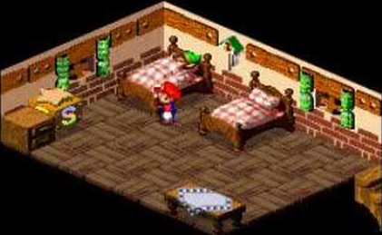
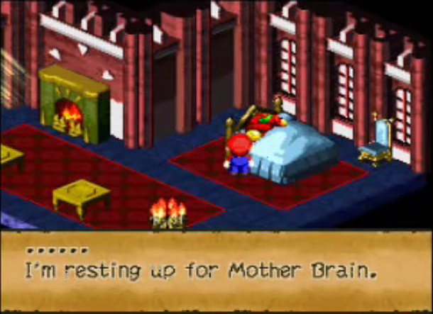

Super Mario RPG Easter Eggs
2/18/2015
Following is a list of all of the easter eggs in the SNES game Super Mario RPG: Legend of the Seven Stars. This is particularly interesting because of the suprisingly large amount of easter eggs in this game, especially when compared to other games from the same time period.
Link
After staying in the Rose Town Inn for the first time, Link from The Legend of Zelda series can be seen sleeping in the other bed. If you attempt to speak with him, the famous secret discovery sound effect from the series will be played.
8-bit Mario
In one of the rooms in Booster's Tower, there is an area seperated by curtains. If Mario moves behind the curtains, when he comes out his sprite will temporarily be his 8-bit Super Mario Bros. sprite instead.
Samus Doll
In another one of the rooms in Booster's Tower, a box full of dolls can be observed. One of them is Samus.

Samus
After collecting the fifth star, Samus can be seen sleeping in the guest bedroom of the castle in the Mushroom Kingdom. If you talk to her, she says she is "resting up for Mother Brain".
Culex
In Monstro Town, if you purchase a shiny stone in Moleville then attempt to open the sealed door, you will meet a secret boos known as Culex, Dark Knight of Vanda. This character resembles final bosses from many Final Fantasy games, and his battle theme is a remix of the Final Fantasy IV final boss theme.
Arwing and Blue Falcon
In Hinopio Mart in Barrel Volcano, models of an Arwing and some of the vehicles from F-Zero can be seen on the shelf.
If you noticed any easter eggs that I missed please let me know in the comments.